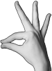
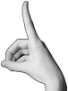
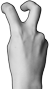
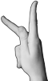

Handformer för amerikanskt och svenskt teckenspråk
Nedan tabell innehåller dels alla handformer som förekommer i de namngivna källorna för ASLwrite, dels de ytterligare handformer som behövs för svenskt teckenspråk.
grå Används inte i språket.
blå Egen, ny symbol, inspirerad av ASLwrite.
Skuggade handformer har ingen egen transkriptionssymbol i bokversionen av Svenskt teckenspråkslexikon, utan anses där vara allofon av en annan handform.
Tabellen är sorterad i samma ordning som de mera utförliga symboltabellerna i Clark (2013: 88–93, 2014 och 2023). Dessa skiljer sig ifrån de kortare symbolförteckningarna (som återfinns i Clark 2013: 8–9, 2017 och 2018) vilka innehåller en förkortad lista med de vanligaste handformerna presenterade i en annan ordning. Clark delar också in handformerna i tre kategorier: öppna handformer (open digits), slutna handformer (closed digits) och blandade handformer (mixed digits).
| Handforms- beskrivning | Handform | Teckenskrift | Svenskt handforms- namn | Transkription | Clark (2023) | ASLwrite (2017) | Clark (2017, 2018) | Clark (2014) | Clark (2013: 89–93) | Tanada (2012) | Arnold (2007) | Fingerspelling | |||||||||
|---|---|---|---|---|---|---|---|---|---|---|---|---|---|---|---|---|---|---|---|---|---|
| r-r-r-r-r | 
| 
| sprethand | |
|
|
|
| |||||||||||||
| b-b-b-b-b | 
| 
| klohand / böjd sprethand | |
|
|
|
| 
| ||||||||||||
| k-r-r-r-r | 
| 4-hand | |
|
|
|
| ||||||||||||||
| k-b-b-b-b | 
| böjd 4-hand | ? |
|
|
| 
| ||||||||||||||
| K-r-r-r-K | 
| 
| W-hand | |
| [1]
|
|
| W | ||||||||||||
| K-b-b-b-K | 
| böjd W-hand | ? |
|
|
| 
| ||||||||||||||
| b-bbbb | 
| S-hand (A) | |
|
|
| 
|
| 
| C | |||||||||||
| r-bbbb | 
| S-hand (B) | |
| |||||||||||||||||
| r-vvvv | 
| 
| vinkelhand (A) | |
|
|
| 
| |||||||||||||
| ? | ? | ||||||||||||||||||||
| ? | ? | ||||||||||||||||||||
| ? | ? | ||||||||||||||||||||
| rvvvv | 
| 
| vinkelhand (B)
Modifierad
(se ") och
och ") ). ).
| | |||||||||||||||||
| v-v-v-v-v | 
| vinklad sprethand / manethand | 
| ||||||||||||||||||
| r-rrrr | 
| flat hand (A) | |
|
|
|
| 
| |||||||||||||
| k-rrrr | 
| 
| D-hand | |
|
|
| 
| B | ||||||||||||
| rrrrr | 
| flat hand (B) | | ||||||||||||||||||
| b-b-r-r-r | 
| stor måtthand |
|
|
| [2] | |||||||||||||||
| B-B-r-r-r | 
| 
| stor nyphand (A) / böjd stor nyphand / rund nyphand | 
|
|
|
|
| 
| F | |||||||||||
| V-V-r-r-r |  | stor nyphand (B) | | ||||||||||||||||||
| B-B-rrr | 
| 
| stor nyphand (C) / böjd stor nyphand / rund nyphand
Modifierad
(se  ). ).
| | |||||||||||||||||
| v-v-r-r-r | 
| 
| stor nyphand (D)
Blandning av  och .
och .
| | [2] | 
| |||||||||||||||
| +V-V-r-r-r | 
| ||||||||||||||||||||
| +V-B-r-r-r | 
| ||||||||||||||||||||
| v-r-b-r-r | 
| 
| stort långfinger (B) / böjt långfinger | |
|
| [2] | ||||||||||||||
| B-r-B-r-r | 
| runt långfinger (A) | |
|
|
|
| [2] | |||||||||||||
| V-r-V-r-r | 
| 
| runt långfinger (B)
Blandning av
och  . .
| | |||||||||||||||||
| +V-r-B-r-r | 
| 
|
|
|
| [2] | 
| ||||||||||||||
| r-r-v-r-r | 
| 
| stort långfinger (A) | |
|
|
|
| |||||||||||||
| K-r-r-F-r | 
|
|
|
| |||||||||||||||||
| KKKKK | 
| 
| knuten hand (A) | |
|
|
|
| 
| S | |||||||||||
| v-vvvv | 
| [3]
| tumvinkelhand
Återanvänd äldre ‘1-g’ (ASLwrites symbol är likadan som flat hand ) | | 
|
|
| [4] | 
| ||||||||||||
| V-VVVV |
| A-hand | | [5]
| 
|
| 
| ||||||||||||||
| B-BBBB | 
| 
| O-hand | |
|
|
| O | |||||||||||||
| r-kkkk | 
| 
| tumhand (A) | |
|
|
|
| 
| ||||||||||||
| (r)-kkkk | 
| tumhand (B) | | ||||||||||||||||||
| RKkkk | 
| 
| knuten hand (B) | |
|
|
|
| A | ||||||||||||
| RF-kkk | 
|  [6] [6]
| hållhand | | [7] | ||||||||||||||||
| KK|Kkk | 
| 
| amerikansk T-hand |
| [1]
|
|
| T | |||||||||||||
| kffff | 
| 
| amerikansk E-hand (B) / amerikansk ”skrikande” E-hand | [8]
|
| [8]
| 
| 
| |||||||||||||
| KFFFF | 
| 
| amerikansk E-hand (A) | [8]
|
| [1]
| [8]
| 
| 
| E | |||||||||||
| KkkK|K | 
| 
| amerikansk M-hand |
| [1]
|
|
| M | |||||||||||||
| KkK|Kk | amerikansk N-hand | [1] | N | ||||||||||||||||||
| v-v-kkk | 
| 
| rak måtthand | |
|
| [9]
|
|
|  [10] [10]
| G/Q | ||||||||||
| V-V-kkk | 
| 
| nyphand (A) | |
|
|
| ||||||||||||||
| B-B-kkk | 
| 
| nyphand (B) / böjt pekfinger (LO-hand) | 
|
|
|
|
|
| 
| |||||||||||
| b-b-kkk | 
| måtthand (A) | |
|
|
|
|
| |||||||||||||
| r-b-kkk | 
| måtthand (B)
Blandning av
och .
| | ||||||||||||||||||
| R-B-kkk | 
| 
| |||||||||||||||||||
| K-b-KKK | 
| krokfinger | | 
| X | ||||||||||||||||
| r-b-kkk | 
|
|
|
| 
| ||||||||||||||||
| r-r-kkk | 
| 
| L-hand | |
|
|
|
| [11] | L | |||||||||||
| B-r-BBB |  | 
| pekfinger (B) / dejthand | ? |
| [1]
|
|
| 
| D | |||||||||||
| K-r-KKK | 
| pekfinger (A) | |
|
|
|
| Z | |||||||||||||
| K-r-r-KK | 
| 
| V-hand | |
|
|
|
| V | ||||||||||||
| K-b-b-KK |  | 
| (spretad) dubbelkrok | |
|
|
|
| |||||||||||||
| K-bb-KK | 
| (samlad) dubbelkrok | | 
| |||||||||||||||||
| r-bb-kk | 
| 
|
|
|
| 
| |||||||||||||||
| R-r-V-kk |  | 
| K-hand | |
|
|
|
|  [12] [12]
| K/P | |||||||||||
| K-r+r-KK | 
|  [13] [13]
| X-hand | | [14] |
| [1] | R | |||||||||||||
| r-r+r-kk | 
|
|
|
| 
| ||||||||||||||||
| r-r+r-k-r | [15] | 
|
|
| |||||||||||||||||
| r-kkk-r | 
| 
| flyghand (A) | |  [16] [16]
|
|
|
| Y | ||||||||||||
| r-r-kk-r | 
| flyghand (B) | |
|
|
|
| 
| |||||||||||||
| K-r-KK-r | 
| 
| flyghand (C) | |
|
|
|
| 
| ||||||||||||
| V-r-VV-r | 
| U-hand
Blandning av och .
| | ||||||||||||||||||
| KKKK-r | 
| lillfinger | | 
|
|
|
| 
| I/J | ||||||||||||
| K-rrr-K | 
| 
| M-hand
Modifierad  . .
| | |||||||||||||||||
| K-rr-KK | 
|
| N-hand | |
|
|
|
|  [17] [17]
| H/U | |||||||||||
| r-rr-kk | 
| 
| pistolhand | ? |
|
|
| [18] | |||||||||||||
| v-rr-kk | 
| 
| N-måtthand | 
|
|
| |||||||||||||||
| v-r-r-kk | 
| 
| vinklad tupphand | 
|
|
| [19] | 
| |||||||||||||
| V-VV-kk | 
|
| liten O-hand / NA-hand | | 
|
|
| + egen tumlinje. | | ||||||||||||
| v-rrrr | 
| 
| flat tumhand
+ egen tumlinje.
| | |||||||||||||||||
| KvKKK | 
| 
| vinklat pekfinger
Blandning av ‘1-bend L’ och ‘4-bend’. | 
| |||||||||||||||||
| KvvKK | 
| 
| vinklad N-hand
Blandning av (‘3-bend’) och ‘4-bend’. | ||||||||||||||||||
| r-vvkk | 
| vinklad N-hand
‘3-bend’. | ? | ||||||||||||||||||
| V-VVV-r | platt lillfinger | ||||||||||||||||||||
| V-VV-r-r | platt ring- & lillfinger | ||||||||||||||||||||
| r-r-r-r-v | 
| stort lillfinger | |||||||||||||||||||
| KKKK-b | böjt lillfinger | ||||||||||||||||||||
| Handforms- beskrivning | Handform | Teckenskrift | Svenskt handforms- namn | Transkription | Clark (2023) | ASLwrite (2017) | Clark (2017, 2018) | Clark (2014) | Clark (2013: 89–93) | Tanada (2012) | Arnold (2007) | Fingerspelling |
Nya handformer från ASLwrites fejsbokgrupp
Adrean Clark postade (i maj 2017) följande kommentar till ASLwrites
fejsbokgrupp, var i hon summerar de förändringar av handformssymboler som
setts i fejsbokgruppen över tid. Todd Hicks bidrar till diskussionen med en
kommentar om hur den amerikanska ’R’-handformen (svenskt ’X’) också kan
skrivas med en diagonal tumlinje (
→ ).
 Adrean Clark
02:50 Sat, 20 May 2017
Chart of old vs. new ASLwrite digits as of May 2017 - Let me know if I missed any!
Manuel Ortiz
08:59 Sat, 20 May 2017
Don't worry, I try to figure out that is all. I have contact with Adrean about ASL write, I decided to join
Adrean Clark
02:50 Sat, 20 May 2017
Chart of old vs. new ASLwrite digits as of May 2017 - Let me know if I missed any!
Manuel Ortiz
08:59 Sat, 20 May 2017
Don't worry, I try to figure out that is all. I have contact with Adrean about ASL write, I decided to join


Hand Shape Descriptions
Each handshape is described by five letter sequence indicating, the configuration of each finger in the order thumb–index–long–ring–little finger. The following letters are used:
- k = knutet/fisted – The finger is maximally bent, in the same
way it would be if hand was turned into a fist. = KKKKK
- r = rak/straight finger – Finger/thumb is completely straight
(with no bent joints) and is in the plane of the
palm.
= r-rrrr - v = vinklat/angled – Finger/thumb is parallel to
the normal of the palm. Fingers are bent in the innermost
joint.
= V-VVVV - b = böjt/bent – Finger/thumb is parallel to the normal
of the palm, but also bent. Fingers are bent in the innermost
joint.
= V-VVVV - b = böjt/bent – Finger/thumb is angled in roughly the same
direction al for v, but all joints are slightly bent giving
finger/thumb a rounded appearance.
= b-bbbb and
= B-BBBB - f = fyrkant/square – Like k, but innermost joint is
straight and unbent (uncommon).
If the thumb touches other fingers, then thumb + relevant finger cluster is CAPITALIZED (finger cluster = some fingers which are in contact with each other). If thumb is annotated as both separated from (’-’) AND touching the index finger then contact is made at the tip only, if touching without separation then there's contact along the full length of the thumb.
The following symbols are used between thumb/fingers:
- - = spread/separated – These fingers do not
touch.
- + = Crossed. (Also used in front of the thumb to indicate that
it crosses another finger, rather than touch it at the
tip).
= +V-V-r-r-r - | = Separated by thumb. Used to indicate thumb is protruding
between other fingers. When used the thumb is always k, and the
fingers the thumb passes under are underlined. For a Swedish ’E’ all
fingers are underlined (since they wrap around the thumb), but
| is not used (since the tip of the thumb is not
protruding).
 = KKKKK = KK|Kkk
= KKKKK = KK|Kkk
Fotnoter
[1] Clark (2017: 1 & 4
och 2018: 1) använder
symbolerna , , , , ,
och endast i en tabell över
handalfabetet och visar aldrig med bild hur handen ska formas för att skapa
dem. Enligt författaren är detta med avsikt, eftersom handformerna används
väldigt sällan, bortsett ifrån i handalfabetet och initialtecken
(Adrean Clark, Fejsbokkommentar, 23 februari 2024).
[2] Tanada (2012) placerar det mindre streck som indikerar handformen vid V:ets spets för de handformer som involverar pekfingret ( och ) och en bit upp längs V:ets vänstersida för de som involverar långfingret ( och ).
[3] ASLwrite använder symbolen
för tumvinkelhand
men den symbolen är likadan som symbolen
för flat hand. Dagens symbol för rak måtthand
() har dock en äldre variant
() som inte används sedan ’invändigt
O’-markören introducerades (i Clark 2017). I svensk
teckenskrift har jag därför valt att använda den äldre (men otvetydiga)
symbolen för tumvinkelhand.
[4] Tanada (2012: 5, 6) beskriver
symbolen med olika handformer i olika
tabeller. Här utgår jag ifrån att det
är tumvinkelhand
(ifrån vänsterhandtabellen) som är den korrekta tolkningen. Eftersom Tanada
använder för vinklad
tupphand saknas
alltså N-måtthand i hans lista av
handsymboler.[19] Det är dock möjligt att
jag tolkat någon av dessa handsymboler fel. (Om du som läser detta har
kunskaper i japanskt teckenspråk och känner till vilka av
handformerna vinklad tupphand , tumvinkelhand och N-måtthand som förekommer i språket, kontakta
mig gärna!)
[5] Clark
(2023) illustrerar
handformen med ett (felaktigt) foto
på nyphand (A) men
det är i sammanhanget tydligt att det är A-hand som avses, eftersom handformen är placerad
mellan tumvinkelhand och O-hand (vilka, precis som A-hand, har samtliga
fingrar vinklade).
[6] Här används den nyare förenklade
symbolen som nu används istället för den
äldre symbolen i
fejsboksgrupp ASLwrite.
[7] Clark
(2023) använder en
äldre version av symbolen )
[8] Clark (2014 och 2023)
har korrekt beskrivning av symbolerna (
och ) i tabellerna för vänsterhanden, men
i tabellerna för högerhanden har ASLwrite-symbolerna kastats om och
placerats intill fel handbild. I tabellen ovan är symbolerna placerade
intill de korrekta handformerna.
[9] Clark (2017: 1 & 4)
symbolen används för ’Q’ i handalfabetet
och i illustrationerna med handformer paras symbolen ihop med handbilden
för rak måtthand
men för ’G’ används den äldre symbolen .
Detta korrekturfel är åtgärdat i Clark (2018: 1).
[10] Handformstabellerna i Arnold (2007)
inkluderar handformssymboler för rak måtthand två gånger. De två symbolerna skiljer sig
endast i rotation, och tillhörande handillustrationer är avbildade med
olika attityd). Symbolen illustreras med en
attityd som det i amerikanska handalfabetets G
(Arnold 2007: 30 och 40) och
symbolen  har samma attityd som det
amerikanska handalfabetets Q (Arnold 2007: 32 och 42).
har samma attityd som det
amerikanska handalfabetets Q (Arnold 2007: 32 och 42).
[11] Handformstabellerna i Arnold (2007)
inkluderar handformssymboler för L-hand två gånger. De tillhörande handillustrationer
är avbildade med olika attityd, men symbolerna är helt olika).
Symbolen (Arnold 2007: 29
och 39) har används av flera efterföljande källor,
medan  endast förekommer här
(Arnold 2007: 30 och 40).
endast förekommer här
(Arnold 2007: 30 och 40).
[12] Handformstabellerna i Arnold (2007)
inkluderar handformssymboler för K-hand två gånger. De två symbolerna skiljer sig
endast i rotation, och tillhörande handillustrationer är avbildade med
olika attityd). Symbolen illustreras med en
attityd som det i amerikanska handalfabetets K
(Arnold 2007: 32 och 41) och
symbolen har samma attityd som det
amerikanska handalfabetets P (Arnold 2007: 32 och 42).
[13] Clark (2013, 2014, 2017, 2018, och 2023) använder endast
symbolen men i tabellen ovan har jag valt
att använda den variant av symbolen som föreslagits av Todd Hicks
på fejsbokgruppen för
ASLwrite. Hicks har i sin version lagt
till en tvärgående tumlinje vilket gör det lättare att avgöra åt vilket
håll handflatan är vänd (se ’Nya handformer från
ASLwrites fejsbokgrupp’ ovan).
[14] Clark
(2023) använder en
äldre version av symbolen )
[15] Jag skriver här symbolen
med ett brott i lillfingerlinjen (i likhet med lillfingerlinjen i
symbolerna
och ). Detta skiljer sig ifrån ASLwrites
symbol och påminner mer om den äldre
si5s-symbolen med diagonal
lillfingerlinje (Arnold, 2007).
[16] Clark
(2023) använder en
äldre version av symbolen ))
[17] Handformstabellerna i Arnold (2007)
inkluderar handformssymboler för N-hand två gånger. De två symbolerna skiljer sig
endast i rotation, och tillhörande handillustrationer är avbildade med
olika attityd). Symbolen illustreras med en
horisontellt orienterade fingrar, liknande det svenska handalfabetets N
(Arnold 2007: 31 och 40) och
symbolen  har samma attityd som det
amerikanska handalfabetets U (Arnold 2007: 31 och 41).
har samma attityd som det
amerikanska handalfabetets U (Arnold 2007: 31 och 41).
[18] Handformstabellerna i Arnold (2007)
inkluderar handformssymboler för pistolhand två gånger. De två symbolerna skiljer sig
endast i rotation, och tillhörande handillustrationer är avbildade med
olika attityd). Symbolen illustreras med en
horisontellt orienterade fingrar, liknande det svenska handalfabetets N
(Arnold 2007: 31 och 41) och
symbolen har samma attityd som det
amerikanska handalfabetets U (Arnold 2007: 31 och 41).
[19] Tanada (2012) illustrerar
symbolen med bilden vilket jag valt att tolka
som vinklad tupphand
– samma betydelse som Arnold (2007) använder för
symbolen. Eftersom Tanada använder
för tumvinkelhand
saknas alltså N-måtthand i hans lista av
handsymboler.[4] Det är dock möjligt att jag
tolkat någon av dessa handsymboler fel. (Om du som läser detta har
kunskaper i japanskt teckenspråk och känner till vilka av
handformerna vinklad tupphand , tumvinkelhand och N-måtthand som förekommer i språket, kontakta
mig gärna!)
[20] Tanada (2012: 5, 6) illustrerar
symbolen med olika handbilder i
referenstabellerna för höger och vänster hand. Här antas att
högerhandtabellens böjd tupphand är det som avses, eftersom
handformen samlad dubbelkrok med utfälld tumme (som den illustreras med i Tanadas
vänsterhandstabell) också förekommer annorstädes i tabellerna men skrivs
där med symbolen .
[21] Handformstabellerna i Arnold (2007)
inkluderar två olika handformssymboler för jasåhand  . De tillhörande handillustrationerna är
avbildade med olika attityd, men symbolerna är helt olika (och inte, som
man skulle förvänta sig, samma symbol roterade i olika vinklar).
Symbolen (Arnold 2007: 33
och 43) har används av flera efterföljande källor,
medan endast förekommer i Arnold
(2007: 32 och 42).
. De tillhörande handillustrationerna är
avbildade med olika attityd, men symbolerna är helt olika (och inte, som
man skulle förvänta sig, samma symbol roterade i olika vinklar).
Symbolen (Arnold 2007: 33
och 43) har används av flera efterföljande källor,
medan endast förekommer i Arnold
(2007: 32 och 42).
[22] Symbolen  diskuteras
av Gareth Poole och Adrean Clark
i den
här tråden om handsymboler för japanskt teckenspråk i
fejsbokgruppen ASLwrite
(läst mars 2024).
diskuteras
av Gareth Poole och Adrean Clark
i den
här tråden om handsymboler för japanskt teckenspråk i
fejsbokgruppen ASLwrite
(läst mars 2024).
Referenser
Arnold, Robert W. (2007) A Proposal for a Written System of American Sign Language magisteruppsats, Gallaudet University, Washington, DC
Tanada, Shigeru (2012) Learning How to Write in Nihon Shuwa (Japanese Sign Language)
Clark, Adrean
(2013) How
to Write American Sign Language (skapad
2013-02-23 enligt PDF metadata)
Original URL: http://www.aslwrite.com/free/HWASLebookfree.pdf (link
to archive.org)
Clark, Adrean (2014)
“Extended ASL
Digibet” (skapad 2014-06-27 enligt PDF
metadata)
Original URL: http://www.aslwrite.com/free/extendedASLdigibet.pdf (link
to archive.org)
ASLwrite (2017) – En kommentarstråd på fejsbok. Se ’Nya handformer från ASLwrites fejsbokgrupp’ ovan.
Clark, Adrean (2017)
“ASLwrite Summary 3”
(skapad 2017-01-12 enligt PDF metadata)
Original URL: http://www.aslwrite.com/web/wp-content/uploads/2017/11/ASLwriteSummary3.pdf
(link to archive.org)
- ’Invändigt streck’ ändras till att enbart betyda utsträckt pek- och
långfinger (övriga fingrar knutna) och de symboler där markören
tidigare indikerat att samtliga fingrar är utsträckta ändras.
Bibehållna symboler: N-hand (
och ), samlad dubbelkrok
( och )
och vinklad tupphand (). Ändrade
symboler: S-hand
( O-hand
→ ),( → och vinkelhand)( → ). - ’Invändigt O’ införs för att visa utsträckt pekfinger (övriga fingrar
knutna). Detta går ovanstående ändring möjlig genom att frigöra
handformssymbolerna
och . Ändrade symboler: nyphand
( måtthand
→ ),( och rak måtthand
→ )(
→ ). - ’Bruten linje’ (för att markera vilken linje som står för
lillfingret) används nu också
i flyghand
(
→ ). - Korrekturfel: I handalfabetet (sida 1 & 4) skrivs ’G’ fortfarande med
den gamla symbolen istället för den nya
symbolen .
- Korrekturfel: Ett antal symboler finns med i handalfabetet (sida 1 &
4) som beskrivs aldrig i listan över handformssymboler. Dessa är:
’D’ ,
’E’ ,
’M’ ,
’N’ ,
’R’ ,
’T’ och
’W’ .
Clark, Adrean (2018)
“ASLwrite Summary”
(skapad 2018-12-25 enligt PDF metadata)
Original URL: http://www.aslwrite.com/free/ASLwriteSummary.pdf (link
to archive.org)
- Den enda skillnaden mellan Clark (2018) och Clark
(2017) är att bokstaven ’G’ i handalfabetet nu
korrekt skrivs med den nyare symbolen
.
Clark, Adrean (2023)
“Expanded ASL
Digibet” (skapad 2023-09-25 enligt PDF metadata)
Nerladdad
ifrån den
här fejsboktråden i
gruppen ASLwrite
(mars 2024).